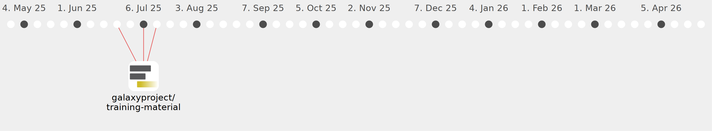

nomadscientist

Commits all-time: 1172
Commits last year: 375

(354)
- 4d76490
- d91a603
- 2377d0c
- 1f778fa
- 6b05a61
- 329cf42
- 0d7a114
- 06b1d72
- ad3e456
- ef41c75
- 733fac3
- fae80ef
- 0b1b2ee
- 8a00646
- a39e871
- 7736a12
- 1d7699b
- dc77bd1
- fdbe537
- a27ddd5
- df08d2b
- d445cdc
- e55a4fa
- 72f3761
- ebdda83
- fd3ebd4
- 9178c60
- 54d0054
- 862de67
- 2f493e9
- 6f00f4c
- 29aca94
- 108b95d
- efc7244
- 24f1423
- 5415849
- 29909ff
- 1ee4349
- 8f176de
- 2de10d4
- 16ce4b1
- bb917fa
- 4e4dd06
- 5612e22
- 1e5f43a
- 449cc4b
- b2e938f
- 79e78ca
- 9304d86
- 67a4c05
- 8a1a1e0
- 013b7d9
- 6894589
- 50a39f2
- 4b98618
- 4466e3b
- 8b2e63c
- b0465d0
- a69e0fa
- 10bf410
- 57023e7
- b9efcf3
- 9de209a
- 6b7bc0c
- 5a7031e
- c795304
- 0a83619
- 261227a
- 28bf21a
- b9c5076
- 78b6361
- e989e3e
- 66add35
- cdc3b2d
- 5438a29
- 768a637
- da323d3
- df538ee
- c244747
- f90187b
- da38c8d
- 9e1b435
- 8f65572
- 91deac9
- 06a9b4b
- ccd5c8b
- 3cef04d
- dacf8d5
- 3abe02e
- 284bf66
- f8530b4
- b6cd1e1
- 194c526
- 0dd4880
- 6452c90
- 92bd875
- 192e8e0
- 76a0900
- 38d576f
- 5b99aa7
- f4b7c47
- 78c9f5f
- c6623cd
- b66c5df
- 9a0ca3c
- 71a6ac3
- 00ea994
- b5acaf8
- 6b7db0d
- 73716c2
- 4042c36
- a76be55
- 0220add
- 7341519
- d5391e2
- fb28c0e
- 14c42ba
- 9f8f0a4
- 22c3a75
- 6ec7a19
- 1d3ce6d
- d89f41f
- d09be00
- a87d330
- 79a598e
- 2f7e7f9
- b3f82fc
- b54ac2b
- 23f3189
- e16ed76
- 0fc8c0c
- b171b1c
- 449ee07
- f6e039f
- 9e2fede
- e4adb5a
- fa70247
- 55b5717
- c3df6f8
- 6cee194
- 3a61c9e
- 860c9a1
- 5815935
- 79f07eb
- 5e67683
- 007ef61
- 55d1710
- 63c9829
- 6445877
- 62c54a7
- f450b9a
- 9c4f57d
- 012f97b
- ac5ebac
- e1259c3
- 21466a1
- 8b0ef38
- 883b708
- a3bbb85
- 6cfd8fd
- d5c3e46
- b95d200
- b5d0331
- 2a12b35
- 17eb771
- bb23bd8
- 27b1e3e
- da45b7d
- feec842
- 4951d15
- 883cbaf
- 3140ce9
- d960ecc
- b997a1e
- aafa796
- db0c85d
- 192026e
- a690294
- 5f9c6d1
- 8f2f946
- c4d2047
- 1f17a13
- 164e8a9
- 5148c9f
- edfd788
- 96683df
- 4c48136
- 03a8f55
- 6dc640d
- 511c22b
- 11f4c34
- 1e80ea5
- 35b84e9
- c684c35
- edb389b
- e136106
- 5d8f787
- ce869fc
- 17a23f6
- ae59263
- 69b1829
- 2453fc0
- 2cd954a
- c176d19
- 3bd3903
- 4055c62
- 1213b44
- 0c39d89
- e3c56cd
- 9875bb7
- d638464
- d7d543d
- fc3d23e
- e1373cf
- 2eecbc7
- ee8f976
- 4cb7b5e
- 04df35e
- 5188c14
- 73efba9
- bd3a8de
- 5297fe0
- 81faa8d
- 2a55341
- 5f28fdc
- 3b562df
- 5862c64
- 21748f6
- 787c9f1
- 3b07d24
- e8b39ba
- a05aeac
- 5d56e66
- 19df758
- f1ae94a
- d98eb12
- 24d7a4e
- 9aba174
- 9bfe17b
- baa39bd
- 87529de
- 8cb9a3a
- b112161
- d4746b9
- 10c7f83
- 677386b
- 5059198
- f8acada
- 93ced48
- 0fe4ed9
- 9d04dc5
- f20640d
- da13023
- 34cedb5
- 6527ecd
- b5eb6de
- ab901fd
- 64e6b3e
- a643299
- 6fa2f15
- f31f83f
- d05dc69
- dd1fedb
- a9107be
- 0bbba24
- e882479
- 96cad50
- f04ad93
- 9cdc0a4
- ab9afa0
- 8a46c90
- 79525ee
- dcd928c
- 3ee31ba
- 1f5bdc3
- ef59515
- d883589
- 3ae3f4c
- 0e1b9d4
- 4035c92
- 1944cd5
- 247dbf0
- dbd403e
- 9332617
- f7436a5
- 8f156a4
- 57a6de7
- 9b3e261
- d02c183
- be2446a
- 5b0d8c4
- 90ffd33
- 1b15ccc
- 290fdd1
- 9bf0a09
- 802894d
- 0496211
- da9194b
- 6d56296
- 85dd6af
- ed29bba
- 0bb1a87
- c79f2a5
- 1b69b34
- 0395bb5
- bcd7233
- ffb22b4
- b528769
- 1a23711
- 518b172
- 7204bcd
- f24a24f
- 2a09f17
- 4821dc6
- 92b608f
- 90aad77
- 07cb402
- 687fef2
- 9fcda0f
- 7783a9d
- 77e9765
- 4c39274
- 1690bb1
- b582a09
- 4bba452
- 72a6710
- 1b70a0b
- aebd57a
- c5343a9
- 72c504c
- 4471b9f
- 90e92d0
- 1c774ac
- de1a1fb
- d70259b
- 5f896f7
- 661cae2
- 2043016
- 77152f4
- fe82617
- ba094d9
- 3a037d5
- 2a062fe
- dd442b5
- c67c7ff
- cb4ab10
- 40aa32c
- 186c77a
- 9824b09
- 05d26e5
- 80a6b5e
- 0482657
- 91a5fd1
- b6e8876
(21)